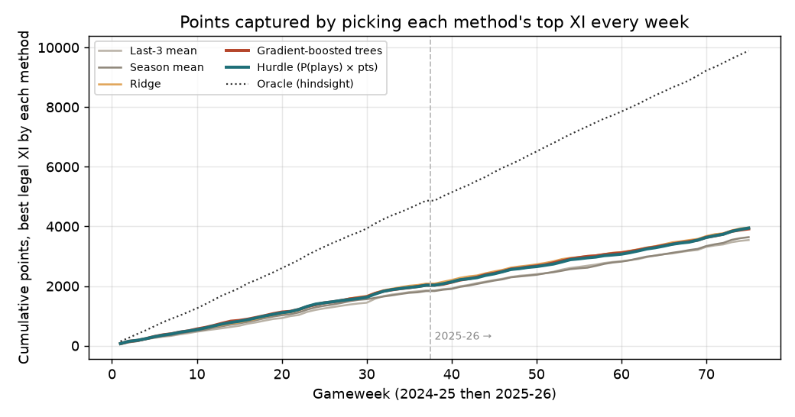
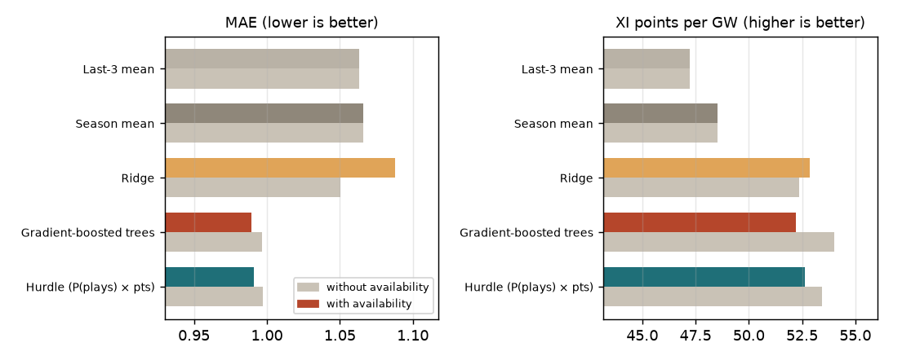

Fantasy Premier League player-performance models
Predict how many fantasy points each footballer scores next week, then test honestly whether those predictions beat simple rules.
Problem
Every week more than 6 million Fantasy Premier League (FPL) managers pick a squad of real footballers and score whatever those players earn on the pitch. I finished in the top 12% using this approach: predict each player's points for the coming gameweek from form and fixture features, then pick the eleven. At the time I did it by hand each week, on Fantasy Football Scout's member data.
This repository rebuilds the same approach on public data, reproducibly, with a walk-forward backtest, so the method can be checked rather than taken on trust.
Question
How many points will each player score in the next gameweek, and does a learned model pick a better starting eleven (XI) than simple rules?
Constraint
Every feature has to be computable before the deadline, and the backtest has to use the models the way a manager would: train on what has happened, predict the coming week, repeat.
Data
- Unit
- One row per player per match, from 2022-23 to now, 114,202 rows, taken from the vaastav archive of the official FPL API. Earlier seasons lack expected goals and assists, so they are excluded.
- Target
- The FPL points the player scored in that match.
- Features
- 79 features, all available before the deadline. Form comes from rolling windows over the last 3, 6 and 10 matches and the season so far: points, minutes, starts, goals, assists, bonus, expected goals and assists, and FPL's influence, creativity and threat index. Every window is shifted by one match, so a player's own result never leaks into its own features. The rest covers team and opponent strength, home or away, days of rest, price, ownership, transfers, position, and availability at the deadline.
- Availability
- The official FPL API publishes injury status only for the current week, so I rebuilt the history from the archive's git log, taking the last weekly snapshot committed before each gameweek's first kickoff. That recovered 152 gameweeks. Players flagged unavailable average 0.001 points.
Approach
- Walk-forward, not cross-validation
For each of the 75 gameweeks across 2024-25 and 2025-26: train on every match that had kicked off by then, predict that gameweek, move on. A random split would leak a player's later form into earlier predictions.
- Baselines first
The mean of the last 3 matches, and the season mean. Roughly what a manager does by eye.
- Three learned models
Ridge regression. Gradient-boosted decision trees (300 rounds, 31 leaves, at least 100 samples per leaf, L2-regularised). And a hurdle model, a classifier for will they play? multiplied by a regressor for points if they do, because most of the variance in FPL points is simply whether the player is on the pitch.
- Score what a manager cares about
Per-match error (mean absolute error, root-mean-square error, Spearman rank correlation), and the points captured by picking each method's best legal XI in a 1-4-4-2 every week. An oracle picking with hindsight sets the ceiling, so the gap to it stays visible.
- Check the data before believing the result
Two checks, one for missing values and one for leakage, which turned out to matter more than any of the modelling (below).
Results

| Method | MAE (mean abs. error, points) | Spearman rank corr. | Starting-XI points per gameweek | vs. last-3 baseline (95% CI) | Share of oracle |
|---|---|---|---|---|---|
| Last-3 mean (baseline) | 1.063 | 0.721 | 47.2 | Baseline | 35.8% |
| Season mean (baseline) | 1.066 | 0.685 | 48.5 | +1.3 [−2.8, +5.0] | 36.8% |
| Ridge | 1.088 | 0.710 | 52.9 | +5.6 [+2.4, +8.7] | 40.1% |
| Gradient-boosted trees | 0.989 | 0.725 | 52.2 | +5.0 [+1.5, +8.4] | 39.6% |
| Hurdle | 0.991 | 0.719 | 52.6 | +5.4 [+1.9, +8.9] | 39.9% |
| Oracle (hindsight) | Not applicable | Not applicable | 131.9 | Not applicable | 100% |
The learned models beat the naive baselines by about 5 points a gameweek on picks, roughly 10%, with about 7% less error, and the gap holds across both seasons. The last column pairs each method against the last-3 baseline gameweek by gameweek and bootstraps the mean difference over 10,000 resamples. Every learned model's interval excludes zero; the season-mean baseline's does not. The three learned models sit inside each other's noise, which is the usual sign that the features are the ceiling rather than the algorithm.
Finding 1: the expected-points column of the archive is contaminated
FPL publishes its own expected points per player, stored in the archive as xP. It is the obvious benchmark, and an early version used it both as a baseline and as a stacking feature, which captured 87% of the oracle. Too good. Two checks showed why:
- Missing values stored as zero. For 27 of the 38 gameweeks in 2025-26 the column is 0 for almost everyone, including starters who scored. Those are weeks the scraper never captured, not predictions of zero.
- Post-match information. Among players who started, archived
xPcorrelates 0.50 with actual points, against 0.15 for the best genuine pre-match feature. Within a single player's season it sits 1.3 points above their average on exactly the matches where they scored. That fits a column re-scraped after the gameweek, once FPL's own form figure already included that week's points.
So xP is excluded from every result above. The code paths stay in the repository so the finding can be reproduced.
Finding 2: the injury data did not help

Availability looked like the single most valuable missing signal, since a player who does not play scores about nothing. The ablation says otherwise: mean absolute error moves from 0.997 to 0.989 and rank correlation from 0.714 to 0.725, but starting-XI points fall from 54.0 to 52.2.
That sits inside the week-to-week noise. The paired per-gameweek difference is −1.8 points, with a 95% bootstrap interval from −4.0 to +0.3, and the ridge and hurdle intervals straddle zero too.
The snapshots average ten days old, and the players any method picks are regular starters whose availability the form features already encode. A real test needs deadline-time snapshots, which do not exist for past seasons, so the pipeline now has to collect them going forward.
What I'd do differently
Snapshot at the deadline
A scheduled job reading the FPL API at every deadline would make availability hours old instead of days. That is the experiment the ablation could not run.
A clean external benchmark
Bookmaker odds, or a third-party expected-points source captured before each deadline, to replace the contaminated xP as the bar to beat.
Optimise the squad, not the starting eleven
Pick the squad under FPL's real constraints, budget, transfers and captaincy, which closes the loop with how I actually play.
Position-specific models
Goalkeepers and forwards earn points in different ways. A single model with position one-hots is probably leaving signal on the table.
Related work
The data comes from the vaastav archive of the official Fantasy Premier League interface, which keeps a weekly copy of the public game data.
The evaluation follows the standard approach for a time series: a walk-forward backtest that trains on the past and predicts the next period. A random split is wrong here, because it puts later information into earlier predictions.
The two findings are textbook cases of two failure modes. One is a missing value a dataset stores as zero. The other is target leakage, where a feature carries information from after the moment of prediction.
Code & artifacts
lagnis337/fpl-player-models contains the data download, the reconstruction of the availability, the feature build, the models, the walk-forward backtest, the ablation, and the figures. Six commands in the README give each number on this page again.